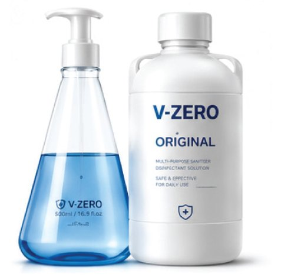
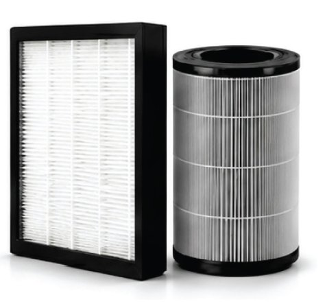
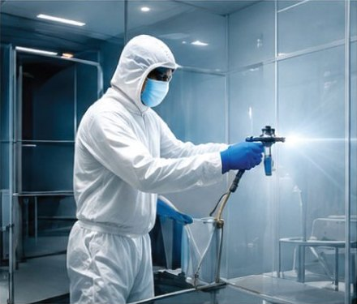
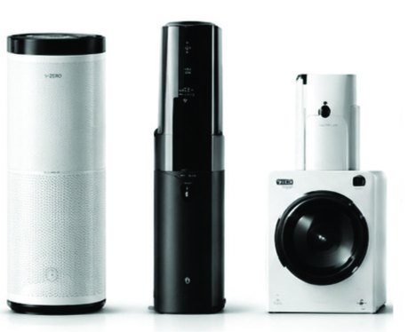
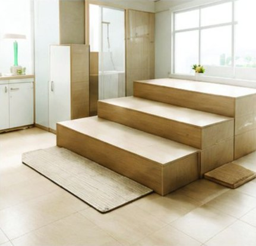
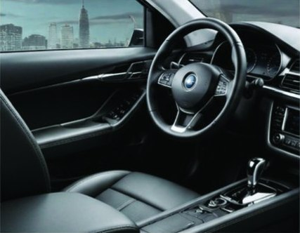
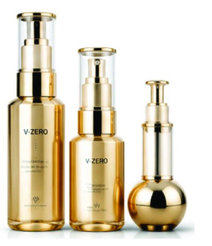

Path 01 · Visible Light
가시광 촉매Visible-light catalysis
산화텅스텐(WO₃)이 일반 실내조명(약 500lux) 수준의 빛으로 활성산소를 만듭니다.Tungsten trioxide (WO₃) generates reactive oxygen under ordinary indoor lighting (approx. 500 lux).
빛이 있을 때도, 없을 때도. 가시광 · 무광 · 열촉매 세 경로로 작동하는 나노 코팅 V-ZERO가 사람이 숨 쉬고 머무는 공간의 표면을 더 깨끗하게 관리합니다. With light or without it. V-ZERO is a nano coating that works through visible-light, lightless and thermal catalysis to keep the surfaces of the spaces where people live and breathe cleaner.

¹ 교토대학 연구팀 시험(2022), 원액 10초 접촉 조건. 시험 조건에서의 결과이며 실제 사용 환경에 따라 달라질 수 있습니다. ¹ Kyoto University research team (2022), 10-second contact with the solution. Results under test conditions; actual performance may vary.
그린파스처는 바이러스와 세균, 새집증후군을 일으키는 휘발성 유기화합물(VOCs) 등 일상의 유해 요인을 근본적으로 줄이기 위한 원천 기술, V-ZERO를 선보입니다. 필터에 쌓아두는 방식이 아니라, 촉매 표면에서 분해하는 방식으로 공간을 관리합니다. Green Pasture introduces V-ZERO, a core technology developed to fundamentally reduce everyday hazards such as viruses, bacteria and the volatile organic compounds (VOCs) behind sick building syndrome. Rather than trapping them in a filter, V-ZERO breaks them down on the catalyst surface.
자외선이 있어야 작동하던 기존 산화티타늄(TiO₂) 광촉매의 한계를 넘어, 실내조명 · 어둠 · 열의 세 가지 조건에서 작동하도록 설계했습니다. Going beyond UV-dependent titanium dioxide (TiO₂) photocatalysts, V-ZERO is designed to work under indoor light, in darkness and with heat.
산화텅스텐(WO₃)이 일반 실내조명(약 500lux) 수준의 빛으로 활성산소를 만듭니다.Tungsten trioxide (WO₃) generates reactive oxygen under ordinary indoor lighting (approx. 500 lux).
나노 백금(Nano-Pt)이 빛이 없는 환경에서도 공기 중 산소 · 수분과 반응하도록 설계되어 24시간 작동합니다.Nano-platinum is designed to react with oxygen and moisture in the air even without light, working around the clock.
온도 조건에 따라 일산화탄소(CO) 등 유해가스의 산화 반응을 돕는 경로입니다.Under suitable temperatures, it assists the oxidation of harmful gases such as carbon monoxide (CO).

가전 필터, 건자재, 화장품 용기 제조업체에 공급하는 프리미엄 원료입니다.A premium raw material supplied to manufacturers of appliance filters, building materials and cosmetic containers.
자세히Details
가정용 · 차량용 공기청정기와 공조 시스템에 장착하는 고효율 필터입니다.High-efficiency filters for home and vehicle air purifiers and HVAC systems.
자세히Details
병원 · 학교 · 모빌리티 공간을 위한 전문 나노 분사 코팅 시공 서비스입니다.A professional nano spray-coating service for hospitals, schools and mobility spaces.
시공 안내Process가전부터 건설, 의료, 모빌리티, 소재, 공공, 글로벌 네트워크까지 — V-ZERO가 함께하는 분야입니다.From appliances to construction, healthcare, mobility, materials, the public sector and global networks.




대리점 · 시공점 · OEM 공급 파트너를 찾습니다.Distributors, applicators and OEM partners wanted.
파트너 신청ApplyUV 살균기 · 이온 발생기 · 화학 세척은 빛, 전력, 반복 작업에 의존합니다. V-ZERO는 표면 자체가 작동하도록 설계되었습니다.UV sterilizers, ionizers and chemical cleaning depend on light, power or repeated work. V-ZERO is designed so that the surface itself does the work.
활성산소가 표면에 닿은 유해 물질을 산화 분해합니다.Reactive oxygen oxidizes contaminants that reach the surface.
무기 나노바인더로 표면에 밀착해 1년 이상 효과 지속 사례가 보고되었습니다.An inorganic nano-binder bonds to the surface; effects lasting over a year have been reported.
코팅된 표면이 작동하므로 별도 장비 · 전기 · 램프 교체가 필요 없습니다.The coated surface works on its own — no devices, electricity or lamp replacement.
굴곡면을 포함해 벽 · 유리 · 섬유 · 금속 · 필터 등 다양한 기재에 시공합니다.Applies to walls, glass, textiles, metals, filters and curved surfaces.
대학 연구팀과 독립 시험기관의 시험, 실제 의료시설 시공 사례에서 확인된 결과를 공개합니다.We share results from university research teams, independent laboratories and an actual medical facility.
빛이 전혀 없는 암소(0lux) 조건에서 콜로니 소멸Colonies eliminated in complete darkness (0 lux)
30℃ · 습도 90% · 32일 조건에서 증식 차단Growth blocked at 30℃, 90% RH for 32 days
피험자 22명 피부 패치 테스트 결과Skin patch test with 22 subjects
황색포도상구균 · JIS R1702 준거 시험S. aureus · per JIS R1702
※ 제조사 · 시험기관이 제공한 시험 결과 요약입니다. 시험 조건에서의 결과이며 실제 사용 환경에 따라 달라질 수 있습니다. 시험성적서는 요청 시 제공합니다. * Summary of results provided by the manufacturer and testing bodies. Results under test conditions; actual performance may vary. Reports available on request.
7대 산업생태계별 대리점 · 시공점 · OEM 공급 파트너를 모집합니다. 분야와 지역에 맞춰 협력 방식을 함께 설계합니다.We are recruiting distributors, applicators and OEM partners across seven industries, with partnership terms tailored to your sector and region.
공간의 용도와 면적, 적용할 소재를 알려주시면 알맞은 제품과 시공 방법, 견적을 안내해 드립니다.Tell us about the use, size and materials of your space, and we'll recommend the right product, process and quote.